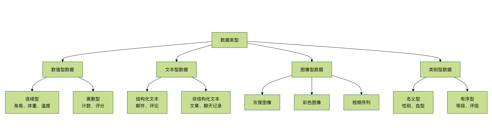

Tipos de datos comunes
Este capítulo te presentará los cuatro tipos de datos más comunes en el aprendizaje automático: datos numéricos, de texto, de imagen y categóricos.
Los tipos de datos son como los tipos de ingredientes, diferentes ingredientes requieren diferentes métodos de procesamiento. Del mismo modo, los diferentes tipos de datos también requieren diferentes técnicas y algoritmos de procesamiento.
Clasificación de los cuatro tipos de datos principales

Datos numéricos
¿Qué son los datos numéricos?
Los datos numéricos son como el resultado de medir con una regla, se pueden realizar operaciones matemáticas y son el tipo de datos más común en el aprendizaje automático.
Clasificación de los datos numéricos
1. Datos numéricos continuos
Ejemplo
import numpy as np
import pandas as pd
import matplotlib.pyplot as plt
def continuous_data_example():
"""Ejemplo de datos numéricos continuos"""
print("=== Ejemplo de datos numéricos continuos ===")
# Generar datos continuos
np.random.seed(42)
n_samples = 1000
# Datos de altura (continuos)
heights = np.random.normal(170, 10, n_samples) # Media 170, desviación estándar 10
weights = heights * 0.7 + np.random.normal(0, 5, n_samples) # El peso está correlacionado con la altura
temperatures = np.random.normal(36.5, 0.5, n_samples) # Temperatura corporal
# Crear un DataFrame
continuous_data = pd.DataFrame({
'Altura (cm)': heights,
'Peso (kg)': weights,
'Temperatura (°C)': temperatures,
'Edad': np.random.randint(18, 65, n_samples)
})
print("Ejemplo de datos continuos:")
print(continuous_data.head())
print(f"\n"Estadísticas de los datos:")
print(continuous_data.describe())
# Visualizar la distribución de datos continuos
plt.figure(figsize=(12, 8))
plt.subplot(2, 2, 1)
plt.hist(continuous_data['Altura (cm)'], bins=30, alpha=0.7, color='skyblue')
plt.title('Distribución de altura')
plt.xlabel('Altura (cm)')
plt.ylabel('Frecuencia')
plt.subplot(2, 2, 2)
plt.hist(continuous_data['Peso (kg)'], bins=30, alpha=0.7, color='lightgreen')
plt.title('Distribución de peso')
plt.xlabel('Peso (kg)')
plt.ylabel('Frecuencia')
plt.subplot(2, 2, 3)
plt.hist(continuous_data['Temperatura (°C)'], bins=30, alpha=0.7, color='salmon')
plt.title('Distribución de temperatura')
plt.xlabel('Temperatura (°C)')
plt.ylabel('Frecuencia')
plt.subplot(2, 2, 4)
plt.scatter(continuous_data['Altura (cm)'], continuous_data['Peso (kg)'], alpha=0.6)
plt.title('Altura vs Peso')
plt.xlabel('Altura (cm)')
plt.ylabel('Peso (kg)')
plt.tight_layout()
plt.show()
return continuous_data
# Ejecutar el ejemplo
continuous_df = continuous_data_example()
2. Datos numéricos discretos
Ejemplo
def discrete_data_example():
"""Ejemplo de datos numéricos discretos"""
print("\n"=== Ejemplo de datos numéricos discretos ===")
# Generar datos discretos
np.random.seed(42)
n_samples = 500
# Datos discretos
customer_count = np.random.poisson(10, n_samples) # Distribución de Poisson: número de clientes
product_rating = np.random.randint(1, 6, n_samples) # Calificación de 1 a 5 estrellas
defect_count = np.random.binomial(20, 0.1, n_samples) # Distribución binomial: número de defectos
call_duration = np.random.exponential(5, n_samples) * 60 # Distribución exponencial: duración de la llamada (segundos)
# Crear un DataFrame
discrete_data = pd.DataFrame({
'Número de clientes': customer_count,
'Calificación del producto': product_rating,
'Número de defectos': defect_count,
'Duración de la llamada (s)': call_duration.astype(int)
})
print("Ejemplo de datos discretos:")
print(discrete_data.head())
print(f"\n"Estadísticas de los datos:")
print(discrete_data.describe())
# Visualizar datos discretos
plt.figure(figsize=(12, 8))
plt.subplot(2, 2, 1)
plt.hist(discrete_data['Número de clientes'], bins=range(0, max(discrete_data['Número de clientes'])+2),
alpha=0.7, color='orange')
plt.title('Distribución del número de clientes')
plt.xlabel('Número de clientes')
plt.ylabel('Frecuencia')
plt.subplot(2, 2, 2)
value_counts = discrete_data['Calificación del producto'].value_counts().sort_index()
plt.bar(value_counts.index, value_counts.values, color='purple', alpha=0.7)
plt.title('Distribución de calificaciones del producto')
plt.xlabel('Calificación')
plt.ylabel('Frecuencia')
plt.subplot(2, 2, 3)
plt.hist(discrete_data['Número de defectos'], bins=range(0, max(discrete_data['Número de defectos'])+2),
alpha=0.7, color='red')
plt.title('Distribución del número de defectos')
plt.xlabel('Número de defectos')
plt.ylabel('Frecuencia')
plt.subplot(2, 2, 4)
plt.hist(discrete_data['Duración de la llamada (s)'], bins=30, alpha=0.7, color='brown')
plt.title('Distribución de la duración de las llamadas')
plt.xlabel('Duración de la llamada (s)')
plt.ylabel('Frecuencia')
plt.tight_layout()
plt.show()
return discrete_data
# Ejecutar el ejemplo
discrete_df = discrete_data_example()
Métodos de procesamiento de datos numéricos
Ejemplo
class NumericDataProcessor:
def __init__(self):
self.scalers = {}
self.transformers = {}
def detect_outliers(self, data, method='iqr'):
"""Detectar valores atípicos"""
outliers_info = {}
for column in data.select_dtypes(include=[np.number]).columns:
if method == 'iqr':
Q1 = data[column].quantile(0.25)
Q3 = data[column].quantile(0.75)
IQR = Q3 - Q1
lower_bound = Q1 - 1.5 * IQR
upper_bound = Q3 + 1.5 * IQR
outliers = data[(data[column] < lower_bound) |
(data[column] > upper_bound)]
elif method == 'zscore':
z_scores = np.abs((data[column] - data[column].mean()) / data[column].std())
outliers = data[z_scores > 3]
outliers_info[column] = {
'count': len(outliers),
'indices': outliers.index.tolist(),
'percentage': (len(outliers) / len(data)) * 100
}
return outliers_info
def handle_missing_values(self, data, strategy='mean'):
"""Manejar valores faltantes"""
processed_data = data.copy()
for column in processed_data.select_dtypes(include=[np.number]).columns:
if processed_data[column].isnull().sum() > 0:
if strategy == 'mean':
processed_data[column].fillna(processed_data[column].mean(), inplace=True)
elif strategy == 'median':
processed_data[column].fillna(processed_data[column].median(), inplace=True)
elif strategy == 'mode':
processed_data[column].fillna(processed_data[column].mode()[0], inplace=True)
elif strategy == 'forward':
processed_data[column].fillna(method='ffill', inplace=True)
elif strategy == 'backward':
processed_data[column].fillna(method='bfill', inplace=True)
return processed_data
def normalize_data(self, data, method='minmax'):
"""Estandarización de datos"""
from sklearn.preprocessing import MinMaxScaler, StandardScaler, RobustScaler
processed_data = data.copy()
numeric_columns = data.select_dtypes(include=[np.number]).columns
if method == 'minmax':
scaler = MinMaxScaler()
elif method == 'standard':
scaler = StandardScaler()
elif method == 'robust':
scaler = RobustScaler()
else:
raise ValueError("El método debe ser 'minmax', 'standard' o 'robust'")
processed_data[numeric_columns] = scaler.fit_transform(processed_data[numeric_columns])
self.scalers[method] = scaler
return processed_data
def create_features(self, data):
"""Ingeniería de características"""
processed_data = data.copy()
numeric_columns = data.select_dtypes(include=[np.number]).columns
# Crear características polinómicas
if len(numeric_columns) >= 2:
col1, col2 = numeric_columns[0], numeric_columns[1]
processed_data[f'{col1}_x_{col2}'] = data[col1] * data[col2]
processed_data[f'{col1}_div_{col2}'] = data[col1] / (data[col2] + 1e-8)
# Crear características estadísticas
for column in numeric_columns:
processed_data[f'{column}_log'] = np.log1p(data[column])
processed_data[f'{column}_sqrt'] = np.sqrt(np.abs(data[column]))
processed_data[f'{column}_square'] = data[column] ** 2
return processed_data
# Ejemplo de uso
processor = NumericDataProcessor()
# Detectar valores atípicos
outliers = processor.detect_outliers(continuous_df)
print("\n"Resultado de la detección de valores atípicos:")
for column, info in outliers.items():
if info['count'] > 0:
print(f"{column}: {info['count']} valores atípicos ({info['percentage']:.2f}%)")
# Estandarización de datos
normalized_data = processor.normalize_data(continuous_df, method='standard')
print("\n"Ejemplo de datos estandarizados:")
print(normalized_data.head())
Datos de texto
¿Qué son los datos de texto?
Los datos de texto son como la expresión del lenguaje humano, contienen información semántica rica, pero requieren un procesamiento especial para ser utilizados por los modelos de aprendizaje automático.
Clasificación de los datos de texto
1. Datos de texto estructurados
Ejemplo
import pandas as pd
import re
from collections import Counter
def structured_text_example():
"""Ejemplo de datos de texto estructurados"""
print("\n"=== Ejemplo de datos de texto estructurados ===")
# Crear datos de texto estructurados
structured_data = pd.DataFrame({
'ID de correo': range(1, 11),
'Remitente': [
'zhangsan@example.com', 'lisi@company.com', 'wangwu@service.com',
'zhaoliu@business.com', 'qianqi@personal.com', 'sunba@tech.com',
'zhoujiu@edu.com', 'wushi@org.com', 'zhengyi@gov.com',
'chener@health.com'
],
'Asunto': [
'Aviso de reunión: reunión mañana a las 3 p. m.',
'Cotización de producto: última lista de precios',
'Comentarios del cliente: encuesta de satisfacción del servicio',
'Progreso del proyecto: primera fase completada',
'Arreglo de vacaciones: aviso de vacaciones por el Día Nacional',
'Actualización técnica: anuncio de actualización del sistema',
'Conferencia académica: convocatoria de artículos',
'Aviso de capacitación: capacitación para nuevos empleados',
'Documento de políticas: normativa más reciente',
'Recordatorio de salud: aviso de examen médico'
],
'Longitud del contenido': [156, 234, 189, 145, 98, 267, 198, 134, 312, 87]
})
print("Ejemplo de datos de texto estructurados:")
print(structured_data)
# Extracción de características de texto
print("\n"=== Análisis de características de texto ===")
# Análisis de dominios de correo electrónico
domains = [email.split('@')[1] for email in structured_data['Remitente']]
domain_counts = Counter(domains)
print(f"Distribución de dominios de correo electrónico: {dict(domain_counts)}")
# Análisis de palabras clave del asunto
all_words = []
for subject in structured_data['Asunto']:
words = re.findall(r'[\u4e00-\u9fff]+', subject) # Extraer vocabulario chino
all_words.extend(words)
word_counts = Counter(all_words)
print(f"Frecuencia de palabras del asunto: {dict(word_counts)}")
# Estadísticas de longitud del contenido
print(f"Estadísticas de longitud del contenido:")
print(structured_data['Longitud del contenido'].describe())
return structured_data
# Ejecutar el ejemplo
structured_text_df = structured_text_example()
2. Datos de texto no estructurados
Ejemplo
def unstructured_text_example():
"""Ejemplo de datos de texto no estructurados"""
print("\n"=== Ejemplo de datos de texto no estructurados ===")
# Crear datos de texto no estructurados
unstructured_texts = [
"""
La tecnología de inteligencia artificial se está desarrollando rápidamente, y se han logrado grandes avances en áreas como el aprendizaje profundo, el aprendizaje automático y el procesamiento del lenguaje natural.
Estas tecnologías tienen aplicaciones amplias en múltiples sectores como la medicina, las finanzas, la educación y el transporte, lo que ha traído nuevas oportunidades para el desarrollo social.
En el futuro, con la mejora de la capacidad computacional y el perfeccionamiento de los algoritmos, la inteligencia artificial desempeñará un papel importante en más campos.
""",
"""
Hoy hace muy buen tiempo, el sol brilla y sopla una brisa suave. Decidí ir a caminar por el parque y disfrutar de este hermoso momento.
Hay muchas flores en el parque, rojas, amarillas, moradas, de todos los colores, muy hermosas. Los pájaros cantan en los árboles,
Las mariposas vuelan entre las flores, todo parece tan armonioso y natural.
""",
"""
El mercado de valores se mostró fuerte hoy, el índice SSE subió un 2.3% y el índice SZSE subió un 1.8%.
Las acciones tecnológicas lideraron las subidas, y muchas acciones alcanzaron el límite de subida. Los analistas creen que esto se debe principalmente a las políticas favorables emitidas recientemente.
La confianza de los inversores se ha visto reforzada, el mercado cotiza activamente y el volumen de operaciones ha aumentado claramente.
""",
"""
Un estilo de vida saludable incluye una dieta equilibrada, ejercicio moderado, sueño suficiente y una actitud positiva.
Se recomienda consumir verduras y frutas a diario, reducir los alimentos grasos; hacer ejercicio al menos 3 veces por semana, cada sesión de más de 30 minutos;
Asegurar de 7 a 8 horas de sueño; aprender a regular las emociones y mantener una actitud positiva y optimista.
"""
]
text_categories = ['Tecnología', 'Vida', 'Finanzas', 'Salud']
# Crear dataframe
unstructured_df = pd.DataFrame({
'Texto': unstructured_texts,
'Categoría': text_categories
})
print("Ejemplo de datos de texto no estructurados:")
for i, row in unstructured_df.iterrows():
print(f"\nCategoría: {row['Categoría']}")
print(f"Texto: {row['Texto'][:100]}...")
return unstructured_df
# Ejecutar ejemplo
unstructured_text_df = unstructured_text_example()
Métodos de procesamiento de datos de texto
Ejemplo
# Métodos de procesamiento de datos de texto
import jieba
from sklearn.feature_extraction.text import TfidfVectorizer, CountVectorizer
from sklearn.preprocessing import LabelEncoder
class TextDataProcessor:
def __init__(self):
self.vectorizers = {}
self.label_encoders = {}
def clean_text(self, text):
"""Limpieza de texto"""
# Eliminar caracteres especiales y números
text = re.sub(r'[^\u4e00-\u9fff\s]', '', text)
# Eliminar espacios sobrantes
text = re.sub(r'\s+', ' ', text).strip()
return text
def tokenize_chinese(self, text):
"""Segmentación de texto chino"""
words = jieba.lcut(text)
# Eliminar palabras vacías (versión simplificada)
stop_words = {'的', '了', '在', '是', '我', '有', '和', '就', '不', '人', '都', '一', '一个', '上', '也', '很', '到', '说', '要', '去', '你', '会', '着', '没有', '看', '好', '自己', '这'}
words = [word for word in words if word not in stop_words and len(word) > 1]
return words
def extract_features(self, texts, method='tfidf'):
"""Extracción de características"""
# Preprocesamiento de texto
cleaned_texts = [self.clean_text(text) for text in texts]
if method == 'tfidf':
vectorizer = TfidfVectorizer(max_features=1000, token_pattern=r'(?u)\b\w+\b')
elif method == 'count':
vectorizer = CountVectorizer(max_features=1000, token_pattern=r'(?u)\b\w+\b')
else:
raise ValueError("El método debe ser 'tfidf' o 'count'")
features = vectorizer.fit_transform(cleaned_texts)
self.vectorizers[method] = vectorizer
return features.toarray(), vectorizer.get_feature_names_out()
def analyze_text_statistics(self, texts):
"""Análisis estadístico de texto"""
stats = []
for text in texts:
cleaned_text = self.clean_text(text)
words = self.tokenize_chinese(cleaned_text)
stats.append({
'Número de caracteres': len(text),
'Número de caracteres después de la limpieza': len(cleaned_text),
'Número de palabras': len(words),
'Longitud media de palabras': np.mean([len(word) for word in words]) if words else 0,
'Número de palabras únicas': len(set(words))
})
return pd.DataFrame(stats)
def encode_labels(self, labels):
"""Codificación de etiquetas"""
encoder = LabelEncoder()
encoded_labels = encoder.fit_transform(labels)
self.label_encoders['default'] = encoder
return encoded_labels, encoder.classes_
# Ejemplo de uso
text_processor = TextDataProcessor()
# Análisis estadístico de texto
text_stats = text_processor.analyze_text_statistics(unstructured_text_df['Texto'])
print("\nAnálisis estadístico del texto:")
print(text_stats)
# Extracción de características
features, feature_names = text_processor.extract_features(
unstructured_text_df['Texto'], method='tfidf'
)
print(f"\nForma de la matriz de características: {features.shape}")
print(f"Primeras 10 características: {feature_names[:10]}")
# Codificación de etiquetas
encoded_labels, label_classes = text_processor.encode_labels(
unstructured_text_df['Categoría']
)
print(f"\nEtiquetas codificadas: {encoded_labels}")
print(f"Clases de etiquetas: {label_classes}")
Datos de imagen
¿Qué son los datos de imagen?
Los datos de imagen son como la representación digital del mundo visual, compuestos por píxeles, que contienen información espacial y de color enriquecida.
Clasificación de los datos de imagen
1. Imágenes en escala de grises
Ejemplo
import numpy as np
import matplotlib.pyplot as plt
from PIL import Image
def grayscale_image_example():
"""Ejemplo de imagen en escala de grises"""
print("\n=== Ejemplo de imagen en escala de grises === ")
# Crear una imagen simple en escala de grises
# Crear una imagen en escala de grises de 100x100
height, width = 100, 100
# Crear una imagen degradada
gradient = np.zeros((height, width))
for i in range(height):
gradient[i, :] = i # Degradado vertical
# Crear patrón de tablero de ajedrez
checkerboard = np.zeros((height, width))
for i in range(0, height, 10):
for j in range(0, width, 10):
if (i // 10 + j // 10) % 2 == 0:
checkerboard[i:i+10, j:j+10] = 255
# Crear patrón circular
circle = np.zeros((height, width))
center_x, center_y = width // 2, height // 2
radius = 30
for i in range(height):
for j in range(width):
if (i - center_y) ** 2 + (j - center_x) ** 2 <= radius ** 2:
circle[i, j] = 255
# Mostrar imagen
plt.figure(figsize=(12, 4))
plt.subplot(1, 3, 1)
plt.imshow(gradient, cmap='gray')
plt.title('Imagen degradada')
plt.axis('off')
plt.subplot(1, 3, 2)
plt.imshow(checkerboard, cmap='gray')
plt.title('Patrón de tablero')
plt.axis('off')
plt.subplot(1, 3, 3)
plt.imshow(circle, cmap='gray')
plt.title('Patrón circular')
plt.axis('off')
plt.tight_layout()
plt.show()
# Información de los datos de imagen
print(f"Forma de la imagen degradada: {gradient.shape}")
print(f"Tipo de datos: {gradient.dtype}")
print(f"Rango de valores de píxel: {gradient.min()} - {gradient.max()}")
return gradient, checkerboard, circle
# Ejecutar ejemplo
gradient_img, checkerboard_img, circle_img = grayscale_image_example()
2. Imágenes en color
Ejemplo
def color_image_example():
"""Ejemplo de imagen en color"""
print("\n=== Ejemplo de imagen en color === ")
height, width = 100, 100
# Crear imagen en color RGB
# Degradado rojo
red_gradient = np.zeros((height, width, 3), dtype=np.uint8)
red_gradient[:, :, 0] = np.linspace(0, 255, width) # Degradado del canal rojo
# Degradado verde
green_gradient = np.zeros((height, width, 3), dtype=np.uint8)
green_gradient[:, :, 1] = np.linspace(0, 255, width) # Degradado del canal verde
# Degradado azul
blue_gradient = np.zeros((height, width, 3), dtype=np.uint8)
blue_gradient[:, :, 2] = np.linspace(0, 255, width) # Degradado del canal azul
# Patrón de arcoíris
rainbow = np.zeros((height, width, 3), dtype=np.uint8)
for i in range(width):
hue = i / width
# Conversión simplificada de HSV a RGB
if hue < 1/3:
rainbow[:, i] = [255 * (1 - 3*hue), 255 * 3*hue, 0]
elif hue < 2/3:
rainbow[:, i] = [0, 255 * (2 - 3*hue), 255 * (3*hue - 1)]
else:
rainbow[:, i] = [255 * (3*hue - 2), 0, 255 * (3 - 3*hue)]
# Mostrar imagen
plt.figure(figsize=(12, 8))
plt.subplot(2, 2, 1)
plt.imshow(red_gradient)
plt.title('Degradado rojo')
plt.axis('off')
plt.subplot(2, 2, 2)
plt.imshow(green_gradient)
plt.title('Degradado verde')
plt.axis('off')
plt.subplot(2, 2, 3)
plt.imshow(blue_gradient)
plt.title('Degradado azul')
plt.axis('off')
plt.subplot(2, 2, 4)
plt.imshow(rainbow)
plt.title('Patrón de arcoíris')
plt.axis('off')
plt.tight_layout()
plt.show()
# Información de canales de imagen
print(f"Forma de la imagen en color: {rainbow.shape}")
print(f"Tipo de datos: {rainbow.dtype}")
print(f"Rango de valores de píxel: {rainbow.min()} - {rainbow.max()}")
return red_gradient, green_gradient, blue_gradient, rainbow
# Ejecutar ejemplo
red_img, green_img, blue_img, rainbow_img = color_image_example()
Métodos de procesamiento de datos de imagen
Ejemplo
# Métodos de procesamiento de datos de imagen
from skimage import filters, feature, measure, transform
from skimage.color import rgb2gray, rgb2hsv
class ImageDataProcessor:
def __init__(self):
pass
def resize_image(self, image, target_size):
"""Redimensionar imagen"""
from skimage.transform import resize
return resize(image, target_size, anti_aliasing=True)
def normalize_image(self, image):
"""Normalización de imagen"""
return (image - image.min()) / (image.max() - image.min())
def extract_color_features(self, image):
"""Extraer características de color"""
if len(image.shape) == 3: # Imagen en color
# Calcular características estadísticas de cada canal
features = {}
for i, channel in enumerate(['R', 'G', 'B']):
channel_data = image[:, :, i]
features[f'{channel}_mean'] = np.mean(channel_data)
features[f'{channel}_std'] = np.std(channel_data)
features[f'{channel}_min'] = np.min(channel_data)
features[f'{channel}_max'] = np.max(channel_data)
# Calcular características de histograma de color
hist_r, _ = np.histogram(image[:, :, 0], bins=256, range=(0, 256))
hist_g, _ = np.histogram(image[:, :, 1], bins=256, range=(0, 256))
hist_b, _ = np.histogram(image[:, :, 2], bins=256, range=(0, 256))
features.update({
'hist_r_peak': np.argmax(hist_r),
'hist_g_peak': np.argmax(hist_g),
'hist_b_peak': np.argmax(hist_b)
})
return features
else: # Imagen en escala de grises
return {
'mean': np.mean(image),
'std': np.std(image),
'min': np.min(image),
'max': np.max(image)
}
def extract_texture_features(self, image):
"""Extraer características de textura"""
if len(image.shape) == 3:
image = rgb2gray(image)
# Calcular características de bordes
edges = filters.sobel(image)
edge_density = np.sum(edges > 0) / edges.size
# Calcular patrón binario local (versión simplificada)
lbp = feature.local_binary_pattern(image, P=8, R=1, method='uniform')
lbp_hist, _ = np.histogram(lbp.ravel(), bins=10)
return {
'edge_density': edge_density,
'lbp_hist': lbp_hist.tolist()
}
def augment_image(self, image):
"""Aumento de imagen"""
augmented = []
# Imagen original
augmented.append(image)
# Volteo horizontal
augmented.append(np.fliplr(image))
# Volteo vertical
augmented.append(np.flipud(image))
# Rotar 90 grados
augmented.append(np.rot90(image))
# Ajuste de brillo
if len(image.shape) == 3:
brightened = np.clip(image * 1.2, 0, 255).astype(np.uint8)
else:
brightened = np.clip(image * 1.2, 0, 1)
augmented.append(brightened)
return augmented
def visualize_image_channels(self, image):
"""Visualizar canales de imagen"""
if len(image.shape) == 3:
plt.figure(figsize=(12, 3))
plt.subplot(1, 4, 1)
plt.imshow(image)
plt.title('Imagen original')
plt.axis('off')
plt.subplot(1, 4, 2)
plt.imshow(image[:, :, 0], cmap='Reds')
plt.title('Canal rojo')
plt.axis('off')
plt.subplot(1, 4, 3)
plt.imshow(image[:, :, 1], cmap='Greens')
plt.title('Canal verde')
plt.axis('off')
plt.subplot(1, 4, 4)
plt.imshow(image[:, :, 2], cmap='Blues')
plt.title('Canal azul')
plt.axis('off')
plt.tight_layout()
plt.show()
# Ejemplo de uso
image_processor = ImageDataProcessor()
# Extraer características de color
color_features = image_processor.extract_color_features(rainbow_img)
print("\nCaracterísticas de color:")
for key, value in color_features.items():
if not key.startswith('hist'):
print(f"{key}: {value:.2f}")
# Extraer características de textura
texture_features = image_processor.extract_texture_features(checkerboard_img)
print("\nCaracterísticas de textura:")
for key, value in texture_features.items():
if key != 'lbp_hist':
print(f"{key}: {value:.4f}")
# Aumento de imagen
augmented_images = image_processor.augment_image(circle_img)
print(f"\nAumento de imagen: se generaron {len(augmented_images)} variantes")
# Visualizar canales de imagen
image_processor.visualize_image_channels(rainbow_img)
Datos categóricos
¿Qué son los datos categóricos?
Los datos categóricos son como etiquetas de clasificación, representan diferentes categorías o grupos, y no pueden someterse a operaciones matemáticas.
Clasificación de los datos categóricos
1. Datos nominales
Ejemplo
def nominal_data_example():
"""Ejemplo de datos nominales"""
print("\n=== Ejemplo de datos nominales === ")
# Crear datos nominales
nominal_data = pd.DataFrame({
'ID de estudiante': range(1, 11),
'Nombre': ['Zhang San', 'Li Si', 'Wang Wu', 'Zhao Liu', 'Qian Qi', 'Sun Ba', 'Zhou Jiu', 'Wu Shi', 'Zheng Shiyi', 'Chen Shier'],
'Sexo': ['Masculino', 'Femenino', 'Masculino', 'Masculino', 'Femenino', 'Femenino', 'Masculino', 'Femenino', 'Masculino', 'Femenino'],
'Grupo sanguíneo': ['A', 'B', 'O', 'AB', 'A', 'B', 'O', 'AB', 'A', 'O'],
'Ciudad': ['Pekín', 'Shanghái', 'Cantón', 'Shenzhen', 'Pekín', 'Shanghái', 'Cantón', 'Shenzhen', 'Pekín', 'Shanghái'],
'Carrera': ['Informática', Matemáticas, Física, Química, Informática, Matemáticas, Física, Química, Informática, Matemáticas]
})
print("Ejemplo de datos nominales:")
print(nominal_data)
# Análisis estadístico de categorías
print("\n=== Análisis estadístico de categorías === ")
for column in nominal_data.select_dtypes(include=['object']).columns:
if column != 'Nombre': # Omitir columna de nombre
value_counts = nominal_data[column].value_counts()
print(f"\n"Distribución de {column}:")
print(value_counts)
print(f"Número de valores únicos: {len(value_counts)}")
return nominal_data
# Ejecutar ejemplo
nominal_df = nominal_data_example()
2. Datos ordinales
Ejemplo
def ordinal_data_example():
"""Ejemplo de datos ordinales"""
print("\n=== Ejemplo de datos ordinales === ")
# Crear datos ordinales
ordinal_data = pd.DataFrame({
'ID de producto': range(1, 11),
'Nombre de producto': [f'Producto {i}' for i in range(1, 11)],
'Nivel de calidad': ['Excelente', 'Bueno', 'Regular', 'Excelente', 'Bueno', 'Regular', 'Malo', 'Excelente', 'Bueno', 'Regular'],
'Satisfacción del cliente': ['Muy satisfecho', 'Satisfecho', 'Regular', 'Muy satisfecho', 'Satisfecho', 'Regular', 'Insatisfecho', 'Muy satisfecho', 'Satisfecho', 'Regular'],
'Rango de precio': ['Alto', 'Medio', 'Bajo', 'Alto', 'Medio', 'Bajo', 'Bajo', 'Alto', 'Medio', 'Medio'],
'Ranking de ventas': [1, 3, 5, 2, 4, 7, 9, 6, 8, 10]
})
print("Ejemplo de datos ordinales:")
print(ordinal_data)
# Análisis estadístico de datos ordinales
print("\n=== Análisis estadístico de datos ordinales === ")
# Definir orden
quality_order = ['Malo', 'Regular', 'Bueno', 'Excelente']
satisfaction_order = ['Insatisfecho', 'Regular', 'Satisfecho', 'Muy satisfecho']
price_order = ['Bajo', 'Medio', 'Alto']
# Convertir a categorías ordinales
ordinal_data['Nivel de calidad_ordinal'] = pd.Categorical(
ordinal_data['Nivel de calidad'], categories=quality_order, ordered=True
)
ordinal_data['Satisfacción del cliente_ordinal'] = pd.Categorical(
ordinal_data['Satisfacción del cliente'], categories=satisfaction_order, ordered=True
)
ordinal_data['Rango de precio_ordinal'] = pd.Categorical(
ordinal_data['Rango de precio'], categories=price_order, ordered=True
)
# Análisis estadístico
for column in ['Nivel de calidad_ordinal', 'Satisfacción del cliente_ordinal', 'Rango de precio_ordinal']:
print(f"\n"Distribución de {column}:")
value_counts = ordinal_data[column].value_counts().sort_index()
print(value_counts)
# Calcular mediana
median_value = ordinal_data[column].median()
print(f"Mediana: {median_value}")
return ordinal_data
# Ejecutar ejemplo
ordinal_df = ordinal_data_example()
Métodos de procesamiento de datos categóricos
Ejemplo
# Métodos de procesamiento de datos categóricos
from sklearn.preprocessing import LabelEncoder, OneHotEncoder, OrdinalEncoder
class CategoricalDataProcessor:
def __init__(self):
self.encoders = {}
self.feature_names = {}
def label_encoding(self, data, columns):
"""Codificación de etiquetas"""
encoded_data = data.copy()
for column in columns:
encoder = LabelEncoder()
encoded_data[f'{column}_encoded'] = encoder.fit_transform(data[column])
self.encoders[f'{column}_label'] = encoder
print(f"Codificación de etiquetas de {column}:")
for i, category in enumerate(encoder.classes_):
print(f" {category} -> {i}")
return encoded_data
def one_hot_encoding(self, data, columns):
"""Codificación one-hot"""
encoded_data = data.copy()
for column in columns:
encoder = OneHotEncoder(sparse=False, drop='first') # Evitar multicolinealidad
encoded_features = encoder.fit_transform(data[[column]])
# Crear nuevos nombres de columna
feature_names = [f'{column}_{category}' for category in encoder.categories_[0][1:]]
# Agregar al DataFrame
for i, feature_name in enumerate(feature_names):
encoded_data[feature_name] = encoded_features[:, i]
self.encoders[f'{column}_onehot'] = encoder
self.feature_names[f'{column}_onehot'] = feature_names
print(f"Codificación one-hot de {column}: se crearon {len(feature_names)} características")
return encoded_data
def ordinal_encoding(self, data, columns, categories_list):
"""Codificación ordinal"""
encoded_data = data.copy()
for column, categories in zip(columns, categories_list):
encoder = OrdinalEncoder(categories=[categories])
encoded_data[f'{column}_ordinal'] = encoder.fit_transform(data[[column]])
self.encoders[f'{column}_ordinal'] = encoder
print(f"Codificación ordinal de {column}:")
for i, category in enumerate(categories):
print(f" {category} -> {i}")
return encoded_data
def target_encoding(self, data, categorical_column, target_column):
"""Codificación por objetivo"""
encoded_data = data.copy()
# Calcular la media del objetivo por categoría
target_means = data.groupby(categorical_column)[target_column].mean()
# Aplicar codificación
encoded_data[f'{categorical_column}_target'] = data[categorical_column].map(target_means)
print(f"Codificación por objetivo de {categorical_column}:")
for category, mean_value in target_means.items():
print(f" {category} -> {mean_value:.4f}")
return encoded_data
def frequency_encoding(self, data, columns):
"""Codificación por frecuencia"""
encoded_data = data.copy()
for column in columns:
# Calcular la frecuencia de cada categoría
frequency = data[column].value_counts(normalize=True)
# Aplicar codificación
encoded_data[f'{column}_frequency'] = data[column].map(frequency)
print(f"Codificación por frecuencia de {column}:")
for category, freq in frequency.head().items():
print(f" {category} -> {freq:.4f}")
return encoded_data
def analyze_categorical_importance(self, data, categorical_columns, target_column):
"""Analizar la importancia de las características categóricas"""
importance_scores = {}
for column in categorical_columns:
# Calcular la diferencia de medias del objetivo por categoría
category_means = data.groupby(column)[target_column].mean()
mean_difference = category_means.max() - category_means.min()
# Calcular el número de categorías
unique_count = data[column].nunique()
# Puntuación de importancia simple
importance = mean_difference * np.log(unique_count + 1)
importance_scores[column] = importance
# Ordenar
sorted_importance = sorted(importance_scores.items(), key=lambda x: x[1], reverse=True)
print("\n"Importancia de las características categóricas:")
for column, importance in sorted_importance:
print(f"{column}: {importance:.4f}")
return importance_scores
# Ejemplo de uso
cat_processor = CategoricalDataProcessor()
# Agregar objetivo numérico para datos nominales
nominal_df_with_target = nominal_df.copy()
nominal_df_with_target['Calificación'] = np.random.randint(60, 100, len(nominal_df))
# Codificación de etiquetas
label_encoded = cat_processor.label_encoding(
nominal_df_with_target, ['Género', 'Grupo sanguíneo', 'Ciudad']
)
# Codificación one-hot
onehot_encoded = cat_processor.one_hot_encoding(
nominal_df_with_target, ['Especialidad']
)
# Codificación por objetivo
target_encoded = cat_processor.target_encoding(
nominal_df_with_target, 'Ciudad', 'Calificación'
)
# Codificación por frecuencia
frequency_encoded = cat_processor.frequency_encoding(
nominal_df_with_target, ['Género', 'Grupo sanguíneo']
)
# Analizar importancia de características
importance_scores = cat_processor.analyze_categorical_importance(
nominal_df_with_target, ['Género', 'Grupo sanguíneo', 'Ciudad', 'Especialidad'], 'Calificación'
)
Fusión de datos multimodales
Ejemplo de fusión de tipos de datos
Ejemplo
class MultiModalDataProcessor:
def __init__(self):
self.numeric_processor = NumericDataProcessor()
self.text_processor = TextDataProcessor()
self.image_processor = ImageDataProcessor()
self.categorical_processor = CategoricalDataProcessor()
def create_multimodal_dataset(self):
"""Crear conjunto de datos multimodal"""
print("\n=== Ejemplo de conjunto de datos multimodal === ")
n_samples = 100
# Características numéricas
numeric_features = {
'Edad': np.random.randint(18, 65, n_samples),
'Ingresos': np.random.normal(50000, 15000, n_samples),
'Experiencia laboral': np.random.randint(0, 20, n_samples)
}
# Características categóricas
categorical_features = {
'Género': np.random.choice(['Masculino', 'Femenino'], n_samples),
'Nivel educativo': np.random.choice(['Bachillerato', 'Grado', 'Máster', 'Doctorado'], n_samples),
'Ciudad': np.random.choice(['Pekín', 'Shanghái', 'Cantón', 'Shenzhen'], n_samples)
}
# Características de texto
text_features = [
f"Esta es la descripción de texto de la muestra {i}, que contiene información básica y características."
for i in range(n_samples)
]
# Características de imagen (simuladas)
image_features = np.random.rand(n_samples, 64, 64, 3) # Simular imagen en color de 64x64
# Variable objetivo
target = np.random.choice([0, 1], n_samples)
# Crear conjunto de datos
dataset = {
'numeric': pd.DataFrame(numeric_features),
'categorical': pd.DataFrame(categorical_features),
'text': text_features,
'image': image_features,
'target': target
}
print(f"Tamaño del conjunto de datos: {n_samples}")
print(f"Características numéricas: {list(numeric_features.keys())}")
print(f"Características categóricas: {list(categorical_features.keys())}")
print(f"Características de texto: {len(text_features)} elementos")
print(f"Características de imagen: {image_features.shape}")
print(f"Variable objetivo: {np.bincount(target)}")
return dataset
def process_multimodal_data(self, dataset):
"""Procesar datos multimodales"""
print("\n=== Procesamiento de datos multimodales === ")
processed_features = {}
# Procesar características numéricas
numeric_data = dataset['numeric']
numeric_processed = self.numeric_processor.normalize_data(numeric_data, method='standard')
processed_features['numeric'] = numeric_processed
# Procesar características categóricas
categorical_data = dataset['categorical']
categorical_processed = self.categorical_processor.one_hot_encoding(
categorical_data, list(categorical_data.columns)
)
# Conservar solo las columnas codificadas
categorical_encoded = categorical_processed.select_dtypes(include=[np.number])
processed_features['categorical'] = categorical_encoded
# Procesar características de texto
text_data = dataset['text']
text_features, _ = self.text_processor.extract_features(text_data, method='tfidf')
processed_features['text'] = text_features
# Procesar características de imagen
image_data = dataset['image']
# Extraer características simples de imagen (media, desviación estándar, etc.)
image_features = []
for img in image_data:
features = self.image_processor.extract_color_features(img)
feature_vector = list(features.values())[:10] # Tomar las primeras 10 características
image_features.append(feature_vector)
processed_features['image'] = np.array(image_features)
# Imprimir resultados del procesamiento
for modality, features in processed_features.items():
if isinstance(features, pd.DataFrame):
print(f"Características de {modality}: {features.shape}")
else:
print(f"Características de {modality}: {features.shape}")
return processed_features
def fuse_features(self, processed_features):
"""Fusión de características"""
print("\n=== Fusión de características === ")
# Combinar todas las características
feature_arrays = []
for modality, features in processed_features.items():
if isinstance(features, pd.DataFrame):
feature_arrays.append(features.values)
else:
feature_arrays.append(features)
# Concatenación horizontal
fused_features = np.hstack(feature_arrays)
print(f"Forma de las características fusionadas: {fused_features.shape}")
return fused_features
# Ejemplo de uso
multimodal_processor = MultiModalDataProcessor()
# Crear conjunto de datos multimodal
multimodal_dataset = multimodal_processor.create_multimodal_dataset()
# Procesar datos multimodales
processed_multimodal = multimodal_processor.process_multimodal_data(multimodal_dataset)
# Fusión de características
fused_features = multimodal_processor.fuse_features(processed_multimodal)
Haz clic para compartir notas
<p style="font-size:14px;">¡Las notas deben ser una extensión del contenido de este artículo!</p><br> <p style="font-size:12px;"><a href="../tougao.html" target="_blank">Para enviar un artículo, haz clic aquí</a></p> <p style="font-size:14px;"><a href="../w3cnote/runoob-user-test-intro.html" target="_blank">Cómo obtener el código de invitación de registro</a></p> <h3 class="text-muted"><i class="fa fa-info-circle" aria-hidden="true"></i> ¡Debes <a href=";.html" class="runoob-pop">iniciar sesión</a> antes de compartir notas!</h3> <p><a href="../w3cnote/runoob-user-test-intro.html" target="_blank">Cómo obtener el código de invitación de registro</a></p>